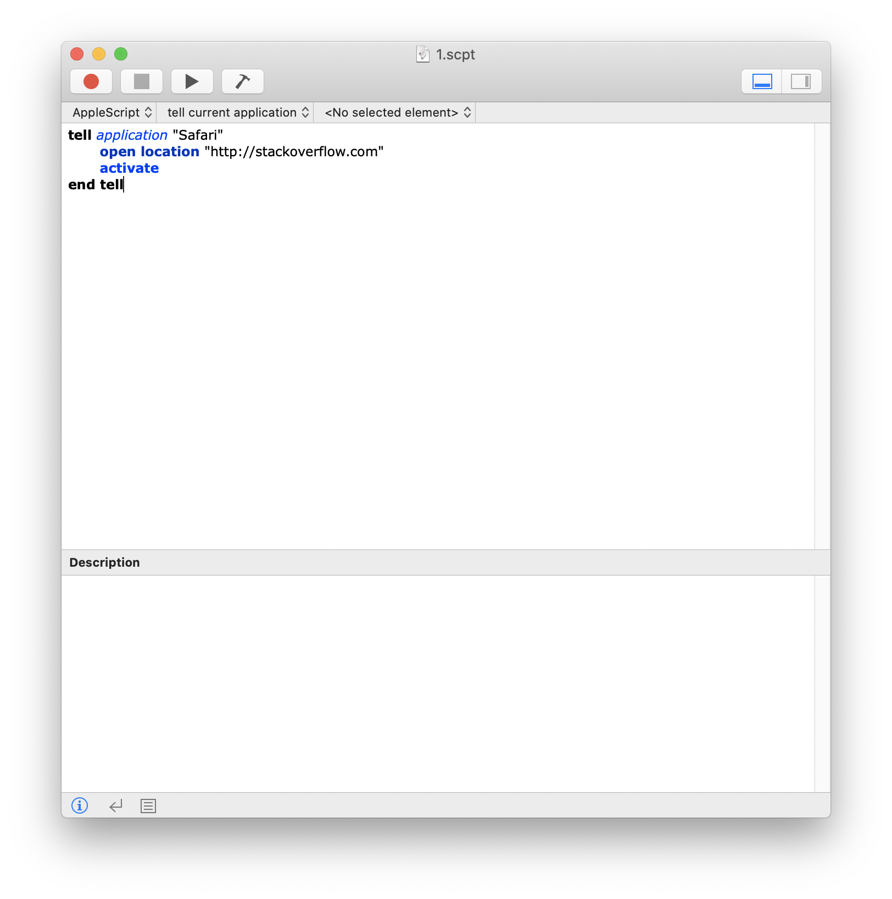
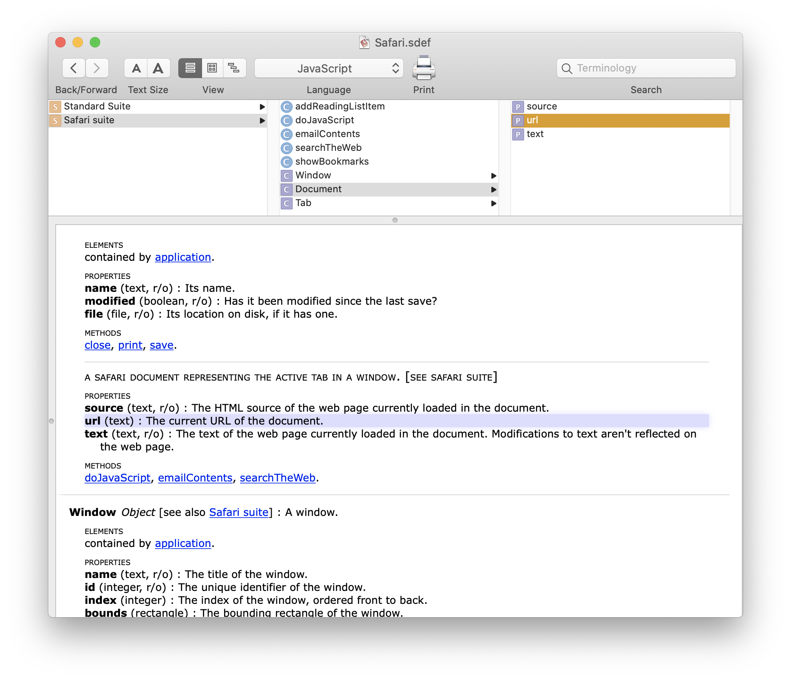
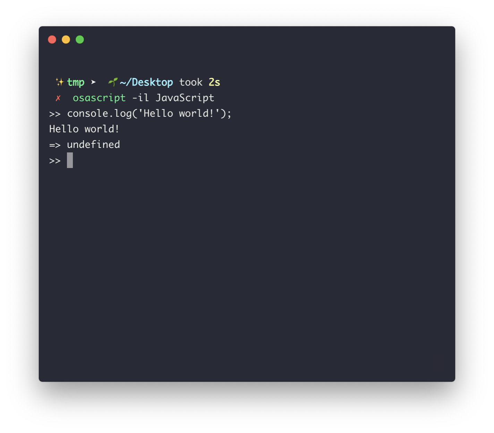
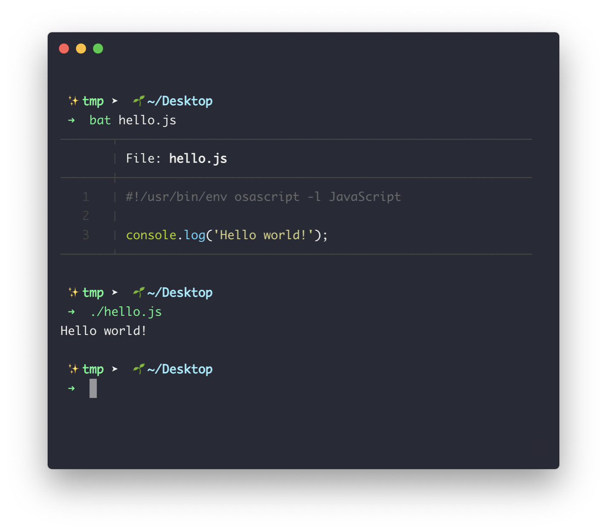
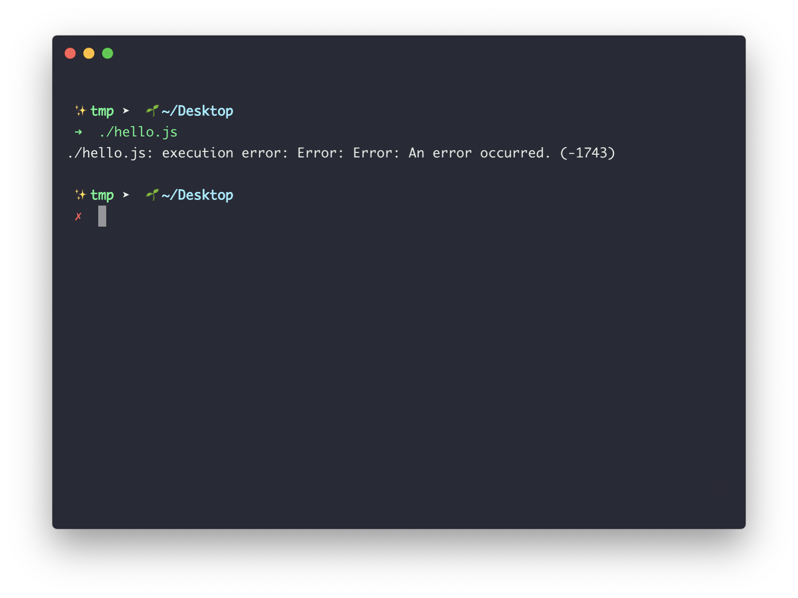
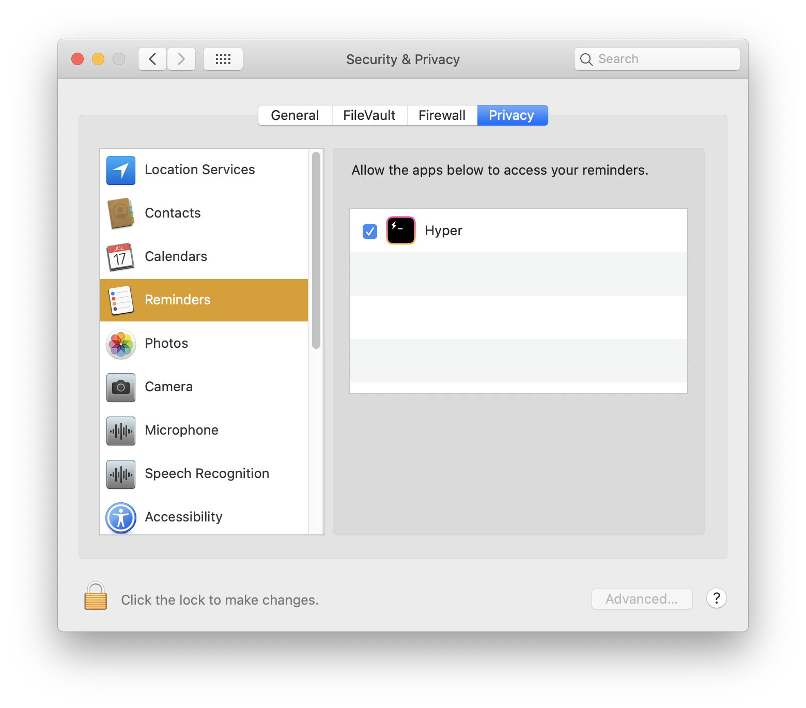
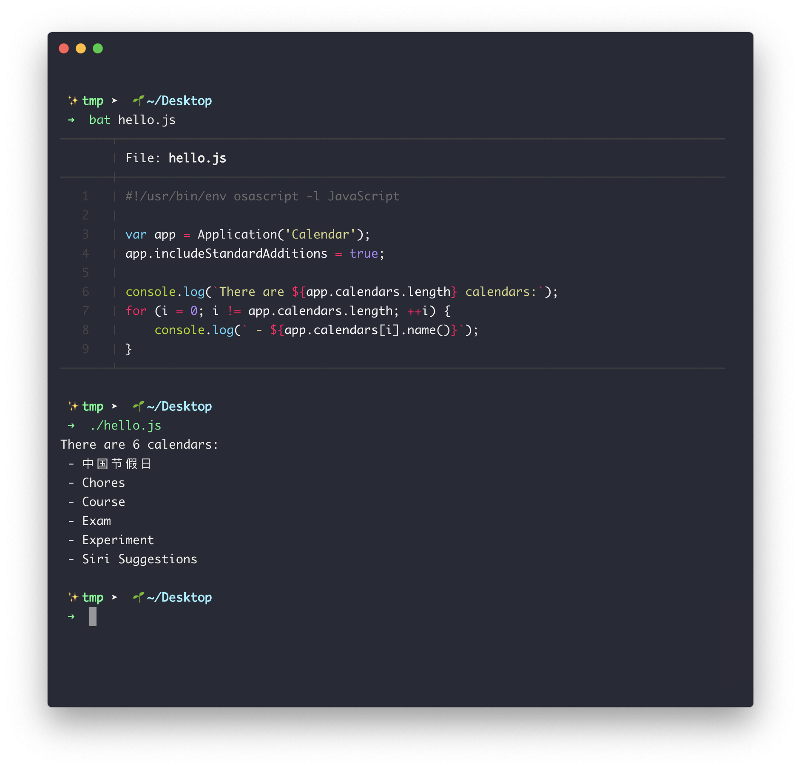

使用 JXA 来完成 MacOS 的自动化
「懒惰是人类进步的阶梯」，随着年纪越来越大，我越来越倾向于写一些自动化的脚本来完成那些重复性较强的工作。很多工作都可以用简单的几行 shell 命令来做到，比如日常的数据备份，一些数据报表的生成等。但到我现在严重依赖苹果🍎生态，「日历」、「备忘录」、「记事本」等原生应用成为我使用最频繁的 APP 之后，我遇到了新的问题。
由于服务的封闭性，服务器并没有开放开发接口之类的东西，允许开发者去控制数据，我很难去写一些程序来控制这些软件了。
Apple Script
在简单搜集了一些信息资料之后，我发现了「Apple Script」这个东西。

在更深入的了解这个玩意之后，发现了更大的惊喜：绝大多数应用都有接口来供系统调用，而我们也可以使用这些接口。在「Script Editor.app」中点击菜单栏中的「File -> Open Dictionary」，然后选中一个应用，就可以打开该应用的接口文档：

诶！真香！
但在我兴致勃勃的学习这么叫做「Apple Script」的语言的时候，激情很快就被消磨的烟消云散：完全没有任何自动补全，语法高亮甚至得成功编译之后才能有，网上的学习资料也少的令人发指；简直就是被历史遗忘的脚本语言。
淦，真臭😤
但这个时候注意到在这个编辑器里我们可以切换语言，除了 Apple Script 甚至还有 JavaScript 可选！这对将 JavaScript 作为刷算法题，写一些小工具的常用语言的我来说又是一个惊喜。
JavaScript for Automation
「JavaScript for Automation」，也简称「JXA」，在 OS X Yosemite 的时候就被加入了。可以允许我们用 JavaScript 来控制应用和系统。甚至还提供了 REPL 环境，osascript -il JavaScript就可以进入交互式模式：

也可以写成脚本，然后在首行加上 Shebang 就行：

然后上手成本也比鬼畜的 Apple Script 要低不少：只要你记住用下面两行命令：
1 | var app = Application('Reminders'); |
用这样的命令来获取一个软件，然后剩下的照着上面的接口文档调用就好了。
！ 注意：需要在「系统设置 -> 安全与隐私 -> 隐私」中给你所用的终端权限，不然会发生未知错误。


举个简单的例子：比如说列出「Calendar.app」中的所有日历：

对，这悲催玩意居然不支持 Array.forEach，甚至 for ... of 也不支持 :)
有了这玩意儿之后就方便多了，我这里简单列举几个小脚本：
列举出提醒时间在三天之内的提醒事件：
1 |
|